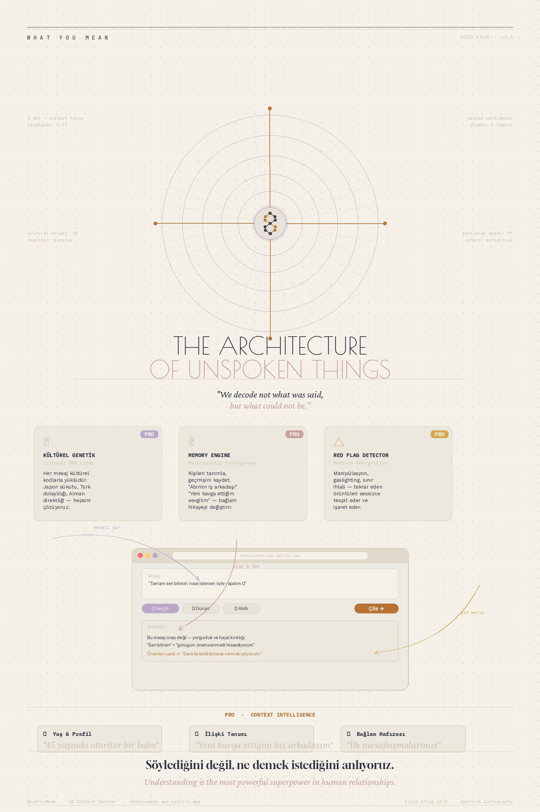

Mesajların arkasındaki gerçek duyguyu, niyeti ve alt metni saniyeler içinde çöz. İlişkilerinde daha iyi anla, daha iyi iletişim kur.

"Çoğu kavga kötü niyetten değil,
yanlış anlamaktan doğar."
Bazen bir mesaj gönderilir, ama asıl söylenmek istenen bambaşkadır. Yorgunluk, kırgınlık, sınır ihlali — hepsi kelimelerin arkasına saklanır. Biz o maskeleri kaldırıyoruz.
Çözmek istediğin mesajı metin kutusuna yaz ya da yapıştır.
Kim gönderdi? Hangi tonda çözülsün — dürüst, şefkatli, komik?
AI mesajın arkasındaki gerçek duyguyu ve önerilen yanıtı üretir.
Şu an aktif olan ve yakında gelecek özellikler.
Mesajın alt metnini, duygusal tonunu ve gerçek niyetini AI ile çöz. 15 ilişki tipi, 5 çözüm tonu.
Aynı mesaj farklı kültürlerde bambaşka anlam taşır. Japon sükutu, Türk dolaylılığı, Alman direktliği — kültürel kodu çözüyoruz.
Kişileri kaydet, geçmiş decode'larına dayalı ilişki analizi al. Örüntüleri gör.
Mesajlardaki manipülasyon, gaslighting veya sınır ihlali örüntülerini otomatik tespit et.
Pro ile AI sadece mesajı değil, ilişkinin tüm hikayesini bilir.
Gönderenin yaşını ve kısa bir kişilik tanımını ekle. AI yorumunu buna göre kalibre eder.
İlişkinin arka planını birkaç kelimeyle tanımla. Bağlam, yorumu tamamen değiştirir.
Her mesaj kültürel kodlarla yüklüdür. Kültürel arka planı seç, AI yorumu o kültürün iletişim örüntülerine göre yapar.
Geçmiş decode'lar birikir, AI zamanla ilişki örüntülerini tanır ve analizini derinleştirir.
Başlamak ücretsiz. Sınırsız için Pro.
Mesajların arkasını çözmeye bugün başla.
Hemen Dene — Ücretsiz